Radio for mac, Apple OSX app. Play and record streaming internet radio from your menu bar
Schedule recordings with Radio for mac
You will use a combination of Radio, Automator and iCal to get your recordings scheduled.
ATTENTION - This will only work if your Mac and Radio are running when the recording is scheduled.
Setting up Radio
Add the station you want to record to your Favorites
Setting up Automator
Make sure that in System Preferences > Accessibility 'Enable access for assistive devices' is turned on.
You need this to record the actions to start/stop recording.
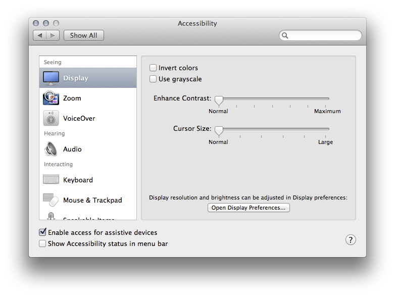
Setting up the Recording script
We first set up the Recording script. This will be station specific so for every station you want to record you will have to do this.
- Open Automator in Applications or via a Spotlight search

- Choose Workflow
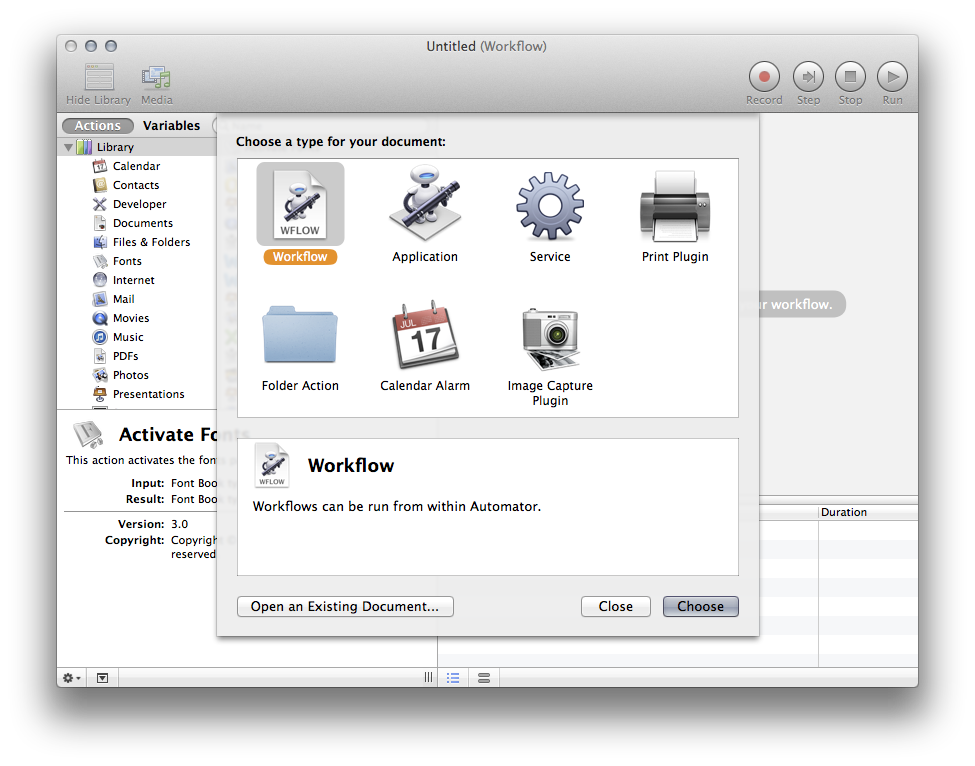 - Choose Record top right
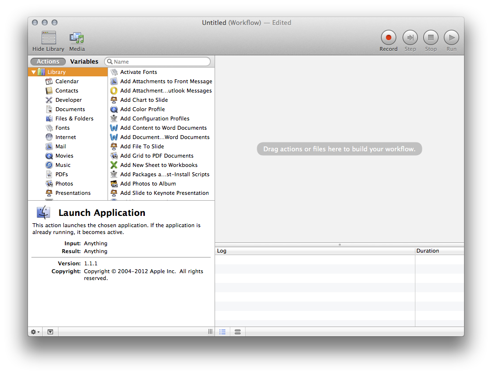 - This will record all your your mouse actions. They will play back exactly as recorded when the script is run later. Do the following actions
- Open Radio menu
- Select your favorite station to play
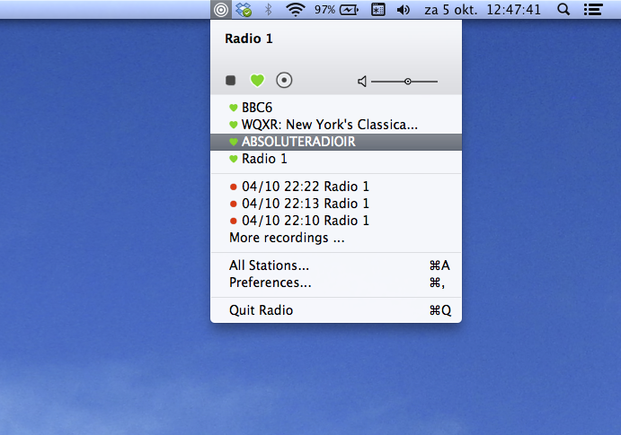 - Open menu again and chose 'record'
- The icon in the menu bar will now have a red center
- If you want to mute the sound while recording slide the volume to the left

- If you want the Radio menu to close after starting the recording click with your mouse next to the menu on your desktop.
- Choose stop 'Atomator : Recording' to stop the Automator recording
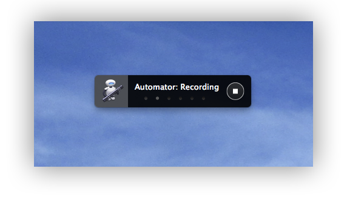
- Your Automator window will now look something like this
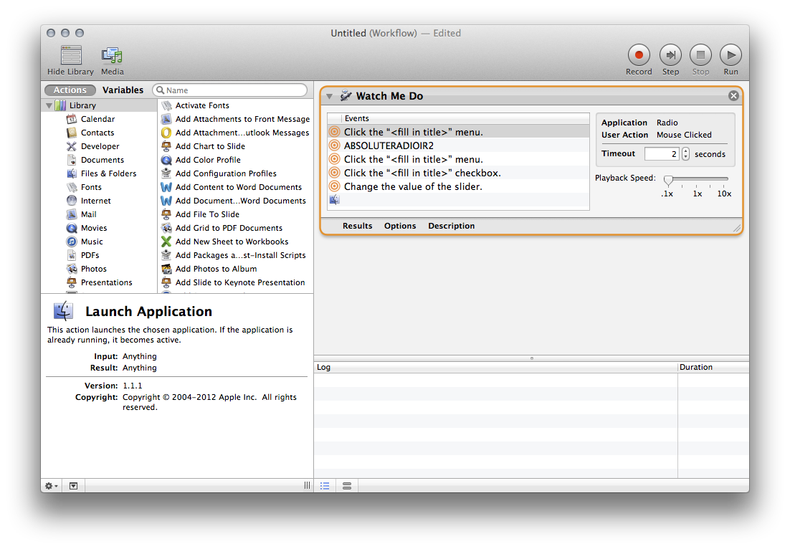
- Make sure your script is blazing fast so it is hard to interrupt:
- Set the Playback Speed to 10x
- Select all Events and set time out to 0 seconds

- Now choose File > Save. Choose a valid name and destination for your file.
For this tutorial you need to save the Workflow as an Application. if you want to have an editable version of the workflow save it as a Workflow.
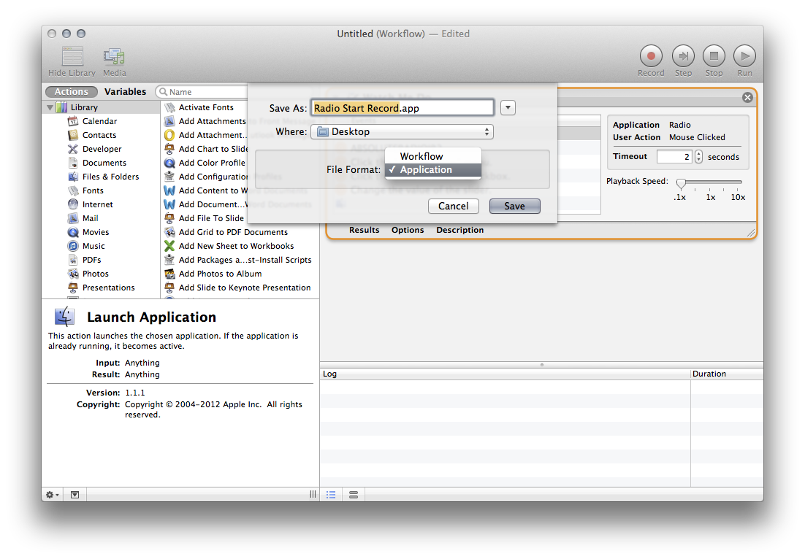
- You now have an app that start recording your favorite station when you launch the app. Try it!
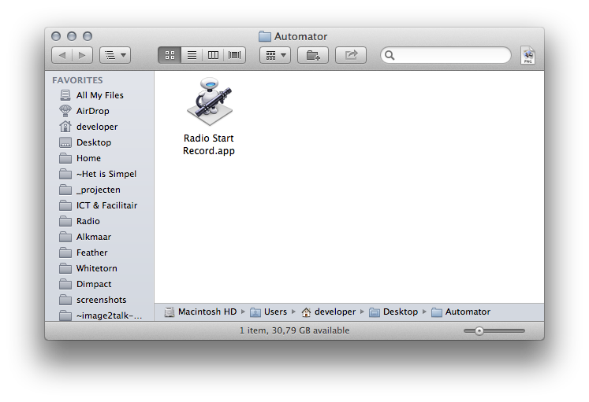
Setting up the Stop script
We now set up a second script to stop the recording at a later moment.
- Open Automator in Applications or via a Spotlight search. If Automator is already open choose File > New.
- Choose Workflow
- Choose Record top right
- This will record all your your mouse actions. They will play back exactly as recorded when the script is run later. Do the following actions
- Open Radio menu
- Choose Stop in Radio Menu

- If you want the Radio menu to close after starting the recording click with your mouse next to the menu on your desktop.
- Choose stop 'Atomator : Recording' to stop the Automator recording
- Your Automator window will now look something like this

- Make sure your script is blazing fast so it is hard to interrupt:
- Set the Playback Speed to 10x
- Select all Events and set time out to 0 seconds

- Now choose File > Save. Choose a valid name and destination for your file.
For this tutorial you need to save the Workflow as an Application. if you want to have an editable version of the workflow save it as a Workflow.

- You now have two apps one of starts and the other stops recording your favorite station when you launch the app. Try it!

Setting up iCal to schedule and start/stop recording
- Run iCal
- Schedule an event at the time of recording. Let's say the show starts at 6.00 pm and ends at 7.00 pm every Thursday night.
- Insert event
- Set repeat schedule (this can be quite smart in iCal)
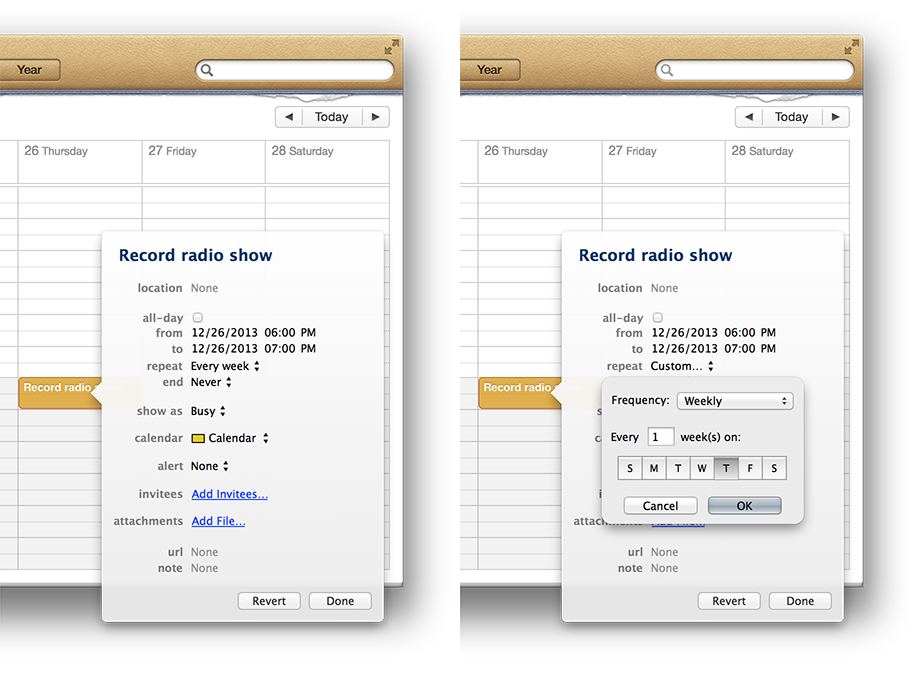
- To start the recording
- choose 'Alert' and then 'Open file'
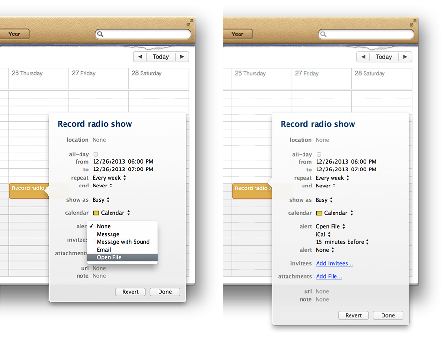 - You will see that 'iCal' is now selected as file to open. Click 'iCal' and choose 'Other…'. Now select your app to START recording in the finder.
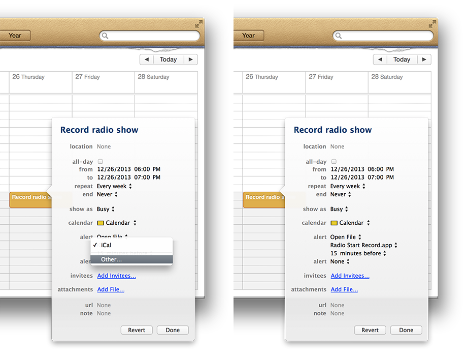 - Next step is to set the amount of time before you want to start the recording, e.g. 1 minute before.

- To stop recording
- You will see that a second alert line appeared. Choose 'Alert' and then 'Open file'.
- You will see that 'iCal' is now selected as file to open. Click 'iCal' and choose 'Other…'. Now select your app to STOP recording in the finder.
- Next step is to set the amount of time after start you want to stop the recording, e.g. 62 minute after.
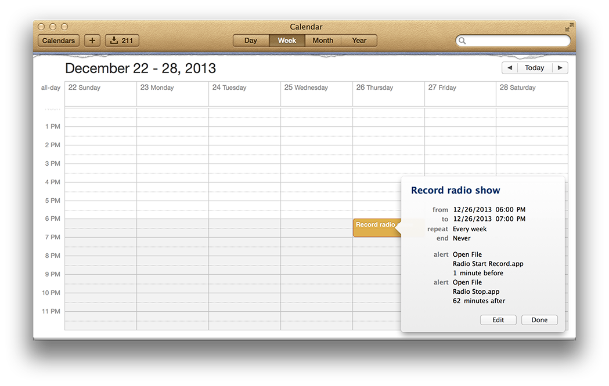
So this is it!
Now you have made two Automator scripts, Start & Stop, and scheduled the recordings.
Remember that both your Mac and Radio need to run to make this work.
PS1. You could launch Radio as part of the start script, e.g. via a Spotlight search and then run Radio. This will also work if Radio already runs.
PS2. Via Preferences > Energy Saver > Schedule... you can set your Mac to start up at a specific time.